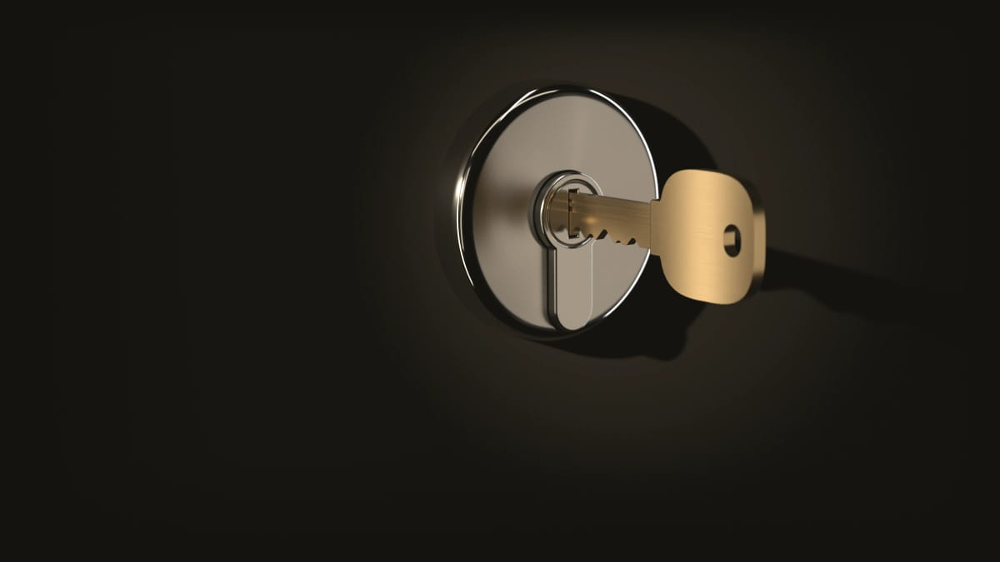
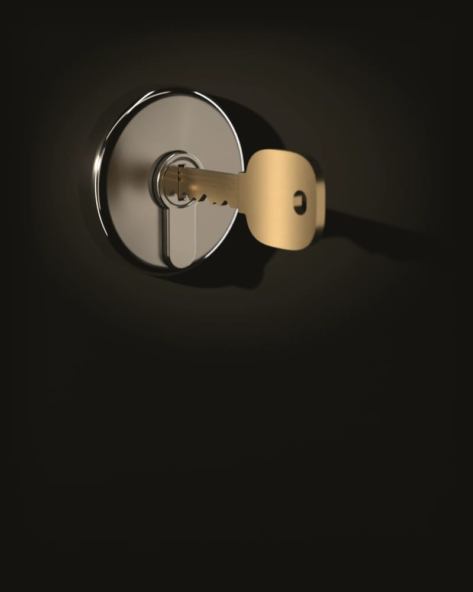

Serrurier à Dijon, jour et nuit
Porte claquée, clé cassée, porte forcée : Dijon et 30 km autour, à toute heure.
On décroche jour et nuit, tous les jours. Prix de départ :
À partir de 75 € TTC
Il est et on décroche. Prix de départ : Il est et on décroche. Prix de départ :Avant qu’il parte, on vous dit par appel ou par SMS qui vient et à partir de combien.
Jusqu’où l’on vient, et dans quel délai
Nous intervenons à Dijon et dans les communes situées à 30 km au plus du centre. Dites votre commune dès le début de l’appel. Si elle est au-delà, on vous le dit tout de suite, plutôt que de vous laisser attendre sur le palier.
Aucun délai en minutes sur cette page. Il dépend de l’heure, de la circulation et de l’endroit où se trouve le serrurier au moment où vous appelez, et un chiffre écrit d’avance ne tiendrait compte de rien de tout ça. Ce qu’on peut vous promettre : le serrurier vous appelle avant d’arriver.
Quand vous appelez
Comment se passe une intervention, en détailVous dites votre adresse et ce qui se passe : porte claquée ou fermée à clé, clé cassée, serrure forcée.
Avant son départ, on vous dit qui vient et le prix de départ.
Chez vous, il regarde la porte et vous remet un devis écrit. Vous l’acceptez, il commence ; sinon, il repart.
À la fin, une facture détaillée.
Le prix de départ ne change pas avec la commune
- Prix de départ :
- À partir de 75 € TTC
À partir de 75 € TTC, par exemple pour ouvrir une porte claquée en journée, déplacement compris, que vous habitiez rue de la Liberté ou à Gevrey-Chambertin.
Le samedi, le dimanche et les jours fériés, rien ne s’ajoute.
Beaune et Auxonne sont au-delà, à 37 et 32 km : appelez quand même, on vous dit si un serrurier peut venir.
Voir le barème completÀ Dijon, plus de huit logements sur dix sont des appartements
C’est le recensement de 2023 qui le dit : 86 944 appartements pour 14 045 maisons. Près de six résidences principales sur dix sont louées, et un peu moins d’une sur cinq a été achevée avant 1946.
Ce que ça change au moment d’appeler
- Dans un immeuble à digicode ou à interphone, donnez le code ou dites comment entrer, et précisez l’étage. Le serrurier doit pouvoir monter jusqu’à votre palier.
- Locataire, vous pouvez demander vous-même l’ouverture d’une porte claquée. Pour changer la serrure, prévenez d’abord votre propriétaire ou votre agence.
- Une vieille porte en bois peut avoir une serrure en applique, vissée sur sa face intérieure ; une porte palière plus récente, une serrure trois points. Décrivez la vôtre au téléphone, même en gros : ça aide le serrurier à préparer son matériel.
Après un cambriolage à Dijon
Si la porte a été forcée et que quelqu’un peut encore se trouver à l’intérieur, n’entrez pas et appelez le 17.
La plainte se dépose au commissariat de police de Dijon, 2 place Suquet, ouvert jour et nuit d’après l’annuaire de l’administration. Un autre commissariat ou une brigade de gendarmerie la prendra aussi : ils sont tenus de l’enregistrer. Photos, plainte, assureur : l’ordre des démarches est détaillé sur notre page consacrée aux cambriolages.
Que faire après un cambriolage, dans l’ordreCe qu’on fait à Dijon
Quand la porte ne s’ouvre plus
Quand vous voulez changer ou renforcer une serrure
Ces travaux-là se font sur rendez-vous. Le serrurier vient voir la porte, et le devis est gratuit.
Les communes autour de Dijon
Talant, Fontaine-lès-Dijon, Chenôve, Longvic, Quetigny et Chevigny-Saint-Sauveur sont toutes à moins de 10 km du centre de Dijon, à vol d’oiseau. Le rayon de 30 km va bien plus loin : Gevrey-Chambertin et Nuits-Saint-Georges au sud, Arc-sur-Tille à l’est, Genlis au sud-est, Is-sur-Tille au nord.
Beaune et Auxonne sont au-delà, à 37 et 32 km.
Toutes les communes à 30 km de DijonQui sonne à votre porte
Celui qui vient, c’est l’associé serrurier, qui travaille à Dijon, ou l’un de nos serruriers partenaires, des indépendants qui travaillent à Dijon et autour. Il vous appelle avant d’arriver.
Qui intervient chez vousAvant d’appeler, à Dijon
- Pourquoi aucune adresse à Dijon sur ce site ?
-
Parce que c’est le serrurier qui vient chez vous, et qu’une adresse affichée doit être celle d’un lieu où l’on vous reçoit. Les interventions se font à Dijon et autour, par des serruriers qui y travaillent.
Reconnaître un faux dépanneur serrurier - J’habite Chenôve, Talant ou Quetigny : vous venez ?
- Oui. Ces communes sont dans notre rayon de 30 km, avec le même prix de départ qu’à Dijon.
- Vous venez aussi la nuit, à Dijon ?
- Oui, à toute heure. La nuit, le serrurier ouvre et remet la porte en état de fermer ; changer une serrure qui fonctionne encore se propose de jour. Le prix est confirmé devant la porte, sur un devis écrit, avant de commencer ; le barème complet est sur la page des tarifs. Le week-end et les jours fériés, il n’y a rien en plus.
- Comment savoir que c’est bien votre serrurier qui sonne ?
- Demandez-lui son prénom à la porte et comparez avec celui qu’on vous a donné au téléphone. S’il ne correspond pas, ne le laissez pas commencer et rappelez-nous.
Porte bloquée à Dijon en ce moment
Restez dans un endroit éclairé, près de la porte, et gardez un peu de batterie pour l’appel du serrurier.
Appeler